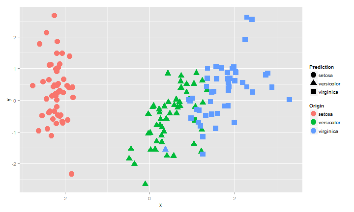

This slide shows how to build a predicative model using iris Data.
require(randomForest)
## Loading required package: randomForest
## randomForest 4.6-7
## Type rfNews() to see new features/changes/bug fixes.
N = nrow(iris)
training_index = sample(1:N,0.6*N,replace = F)
training = iris[training_index, ]
testing = iris[-training_index, ]
mymodel = randomForest(Species~.,data = training)
pred = predict(mymodel,newdata = testing[,-5])
table(pred,testing[,5])
##
## pred setosa versicolor virginica
## setosa 18 0 0
## versicolor 0 20 1
## virginica 0 1 20
mydata = cmdscale(dist( scale(iris[,-5]) ) )
Prediction = predict(mymodel,newdata = iris[,-5])
mydataframe = data.frame(x=mydata[,1],
y=mydata[,2],
Origin = iris$Species,
Prediction = Prediction)
